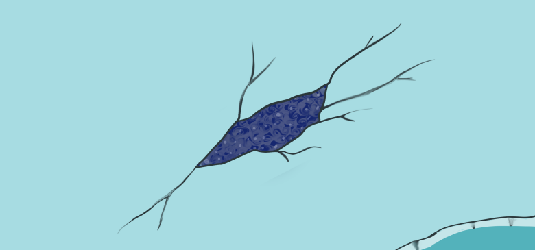
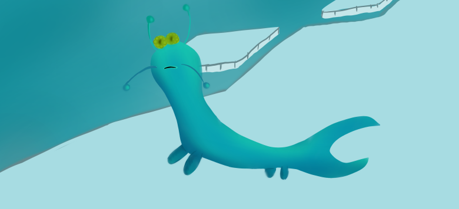

Le psephos est un mollusque mesurant 30 centimètres environ. Il est de couleur bleu, ce qui lui permet de
plus facilement se fondre avec la glace.
Il vit principalement à l'intérieur de la glace, en créant des tunnels
à l'intérieur de celle-ci, grâce à sa queue qui lui permet de creuser.
Naissance

Œufs de psephos sous la glace
Le psephos créer une petite cavité pour y pondre ses œufs. Le psephos pond environ plus de 200 œufs car les œufs de psephos
sont la principale proie d'une des créatures volantes de Chiloni, qui creuse dans la glace avec son bec pour avoir accès aux
œufs du psephos.
Ce problème entraîne la perte de nombreux œufs. Pour une ponte d'environ 200 œufs, seulement une dizaine survivent,
donnant naissances à des petites larves d'une taille de 5 centimètres.
Jeunesse
Les larves, durant leur jeunesse, restent dans la glace. Les psephos adultes, eux, vont chercher de la nourriture, des plantes aquatiques
qui poussent en dessous de la calotte glacière, pour les ramener à l'intérieur des galeries pour nourrir les petites larves.
Reproduction

Un psephos qui cherche une psephose (psephos femelle)
A l'âge adulte, à environ 2Y années, le psephos peut se débrouiller seul pour se nourrir et commence à sortir. Durant cette période,
le psephos doit se reproduire et pour cela, ils sortent souvent pour aller sur la glace et ainsi trouver d'autres psephos qui doivent se reproduire.
C'est à ce moment là que les psephos sont les plus vulnérables aux créatures volantes de Chiloni, qui chassent les psephos.
Cependant, pour se protéger, ils ont une capacité de creuser très vite, afin de se cacher et être hors d'atteinte de ces créatures volatiles.